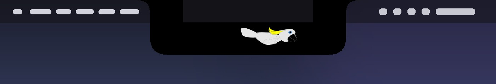
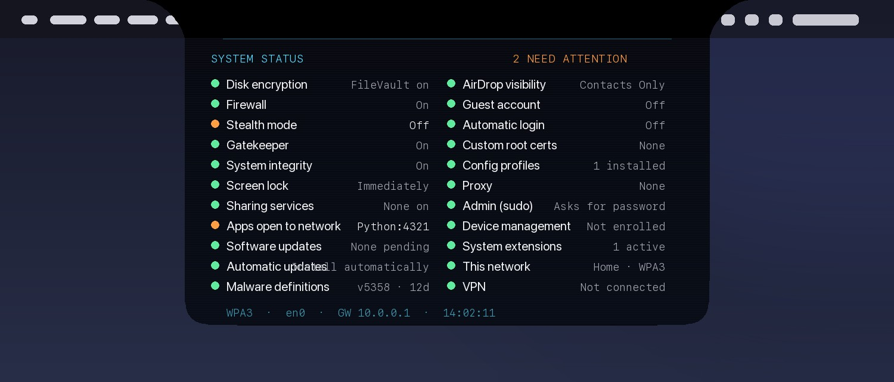
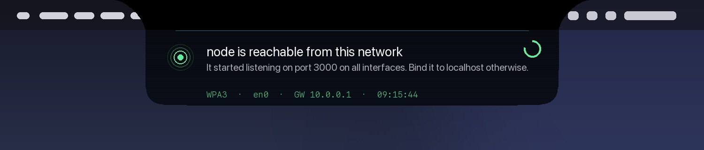

Know what changed.
From the notch.
Ledge watches the network you're on and what your Mac exposes to it, and tells you in plain English the moment something changes. Open Wi-Fi. VPN off. A server suddenly reachable by everyone in the café. A new device at home. Something new set to run at login. It lives in the notch, so you see it; it's quiet the rest of the time.

The shape is the app. It opens out of the hardware notch when something changes and closes when you click anywhere.
What it tells you
Each of these is a change Ledge detects on its own and explains in one card, with what to do. Amber needs a decision; green is for your information. Nothing repeats within its quiet period, and nothing shows for networks you've marked as home unless it matters.
The status board
Click the notch. Twenty-five checks, each green or amber, each with the setting to change. Menu bar shield turns amber while anything needs attention.


Disk encryption · Firewall · Stealth mode · Gatekeeper · System Integrity Protection · Screen lock · Sharing services · Apps open to the network · Software updates · Automatic updates · Malware definitions age · AirDrop visibility · Guest account · Automatic login · Password-less sudo · Custom root certificates · Configuration profiles · Device management · System extensions · Proxy · Your account type · Analytics sharing · Your Mac's visible name · This network · VPN
What it cannot do
Read this before you trust it. Ledge is awareness, not protection.
Next to the tools you may already run
Ledge is designed to sit beside them, not replace them.
| Ledge | Pareto Security | Objective-See tools | Little Snitch | |
|---|---|---|---|---|
| Settings checklist | 25 checks | 30+ checks, one-click fixes | — | — |
| Network change narration (open Wi-Fi, VPN off, proxy, DNS) | Yes | — | — | — |
| Router impersonation, HTTPS interception | Yes | — | — | — |
| What your Mac exposes, judged by network trust | Yes | — | Netiquette lists sockets | — |
| New persistence items | Yes | — | BlockBlock, KnockKnock | — |
| Outbound firewall | — | — | LuLu | Yes |
| Mic and camera use | — | — | OverSight | — |
| Where you see it | The notch, plain English | Menu bar dot | Separate windows | Menu bar, dialogs |
| Price, source | Free, open source | Free, open source | Free, open source | Paid, closed |
Lightweight by design
Network, DNS and proxy changes arrive as system events, so Ledge does nothing while nothing changes. The remaining checks run on minute-scale timers and each is a single short built-in command. No kernel extension, no daemon, no helper, one process, about 1 MB on disk plus a vendor table. Idle CPU is zero.
Install
- Download, unzip, and drag Ledge into your Applications folder.
- Ledge isn't notarized by Apple, so macOS blocks it on first launch. Open Terminal and run the line below. It removes the "downloaded from the internet" flag from this one app, nothing else:
xattr -dr com.apple.quarantine /Applications/Ledge.appPrefer not to use Terminal? Double-click Ledge, then open System Settings › Privacy & Security, scroll to the bottom and click Open Anyway. On macOS 15 and later the old right-click → Open shortcut no longer works for apps like this one. - Open Ledge. A shield appears in the menu bar; a dot on it means something needs attention. Nothing else happens until something changes. Click the notch for the status board.
- On your own Wi-Fi, use the menu-bar shield to Mark this network as Home, so Ledge announces devices that join it.
Why the extra step: notarizing an app requires a paid Apple Developer account, which this free project doesn't have. That is also why the checksum and the full source are published below, so you never have to take the download on trust.
Verify, or build it yourself
Every release publishes its SHA-256. The whole app is four Swift files and builds with Apple's command-line tools.
shasum -a 256 ~/Downloads/Ledge.zip # 1.0.1 → 910b54152bfae4f121f28cc2a7dbc7815d7bb7df09f4031bf9e71be68a70a8ab git clone https://github.com/Saidileepkumarmukkamala/ledge && cd ledge/app && ./build.sh && open Ledge.app
Everything Ledge reads comes from public macOS tools you can run yourself: route, ifconfig, arp, scutil, lsof, fdesetup, socketfilterfw, spctl, csrutil, sysadminctl, profiles, security, systemextensionsctl, sfltool, defaults. The only connection it can make is the optional HTTPS check, off by default.